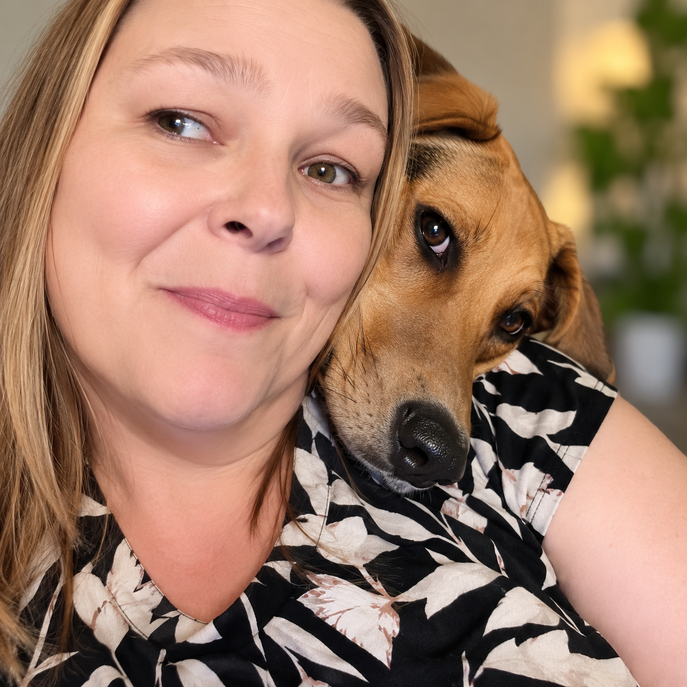

Leadership in Action
Professional Solutions
Throughout my career, I've led initiatives to strengthen organizational operations, improve workforce practices, develop more effective systems, and address challenges affecting both employees and the organizations they serve.
These examples show solutions I've designed and implemented, the decisions behind them, and the outcomes of that work.
Independent Work
Projects
Not every opportunity to improve a system begins with a formal assignment. Some begin with a question, an inefficient process, or an opportunity to explore a different approach.
My independent projects reflect an interest in research, analysis, and practical problem-solving, while giving me opportunities to apply technical skills beyond my professional responsibilities.
Professional Background
Experience
My career spans operations leadership, workforce management, financial oversight, compliance, technology, and organizational improvement. My resume outlines the roles I've held, the scope of my responsibilities, and the contributions I've made.
Professional Credibility
Recommendations
Leadership is also reflected in the experience of those you've worked with. These recommendations come from organizational leaders who can speak to my judgment, professional relationships, leadership, and contributions.
Leadership Perspectives
I share perspectives on organizational leadership, workplace culture, operational challenges, and the responsibility leaders have to question practices that no longer serve their organizations or employees.
About Me
My Approach to Leadership
I believe effective leadership requires understanding more than what's happening within one department. Decisions about people, finances, technology, and operations rarely exist in isolation, and sustainable improvement depends on understanding how those pieces fit together.
I'm a hands-on leader who values accountability, honest communication, and creating environments where people can do their best work. I'm willing to ask difficult questions, challenge long-standing practices, and address problems rather than work around them.
I'm also naturally curious. I enjoy learning and exploring new technology, and that curiosity continues to inform how I lead.
